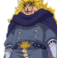
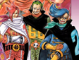

人际关系 |
简介 |
哲普两人的关系犹如父子，虽然哲普表面上对山治十分粗暴，但内心却十分关心山治，他还教导山治要有“骑士道精神”，要尊重女性，不能攻击女性 |
|
|  |
文斯莫克·伽治文斯莫克家族老爷、杰尔马王国国王、杰尔马66统帅，科学家。 |
文斯莫克·索拉山治的母亲，是第一个称赞山治料理好吃的人，也是山治小时候最牵挂的人。 |
|
文斯莫克·蕾玖文斯莫克家族长女。蕾玖在改造成功的前提下保留了情感，但因改造而不能反抗父亲的命令。蕾玖十分关心山治，小时候想方设法地照顾他，后来帮助山治逃出了杰尔马王国。 |
|
|  |
斯莫克·伊治、文斯莫克·尼治、文斯莫克·勇治博三兄弟在一出生就被父亲夺取了“感情”，所以有不会感到“可怜和悲伤”的情感，甚至对灭亡都毫无感觉。 |
夏洛特·布琳山治的未婚妻，夏洛特家族第35女。记忆果实能力者。 |